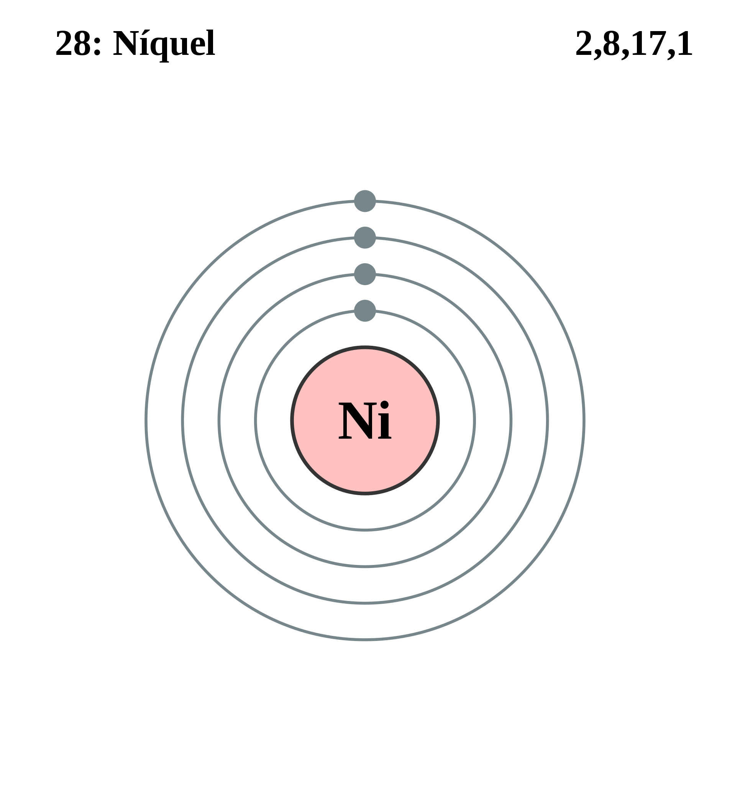

|
|
||
|
NIQUEL El níquel, descubierto en 1751, se encuentra en meteoritos y puede utilizarse para diferenciar los meteoritos de otros minerales. El níquel natural se compone de cinco isótopos estables y existen nueve isótopos inestables. El níquel es un metal de color blanco plateado de alta pulibilidad. Es duro, maleable, dúctil, presenta cierto grado de ferromagnetismo y es un buen conductor térmico y eléctrico. |
 |
DATOS Número Atómico: 28 Peso Atómico: 58.69 Electronegatividad: 1.88 Configuración Electrónica: [Ar]3d⁸4s² Estados de Oxidación: +2,3 No. de Electrones de Valencia: 2 |